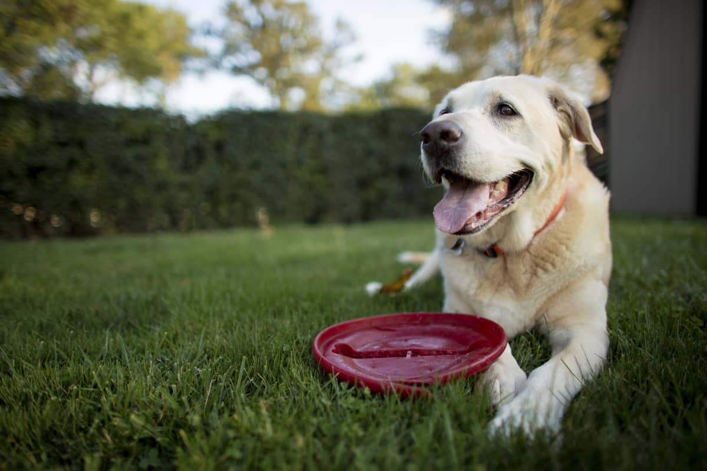
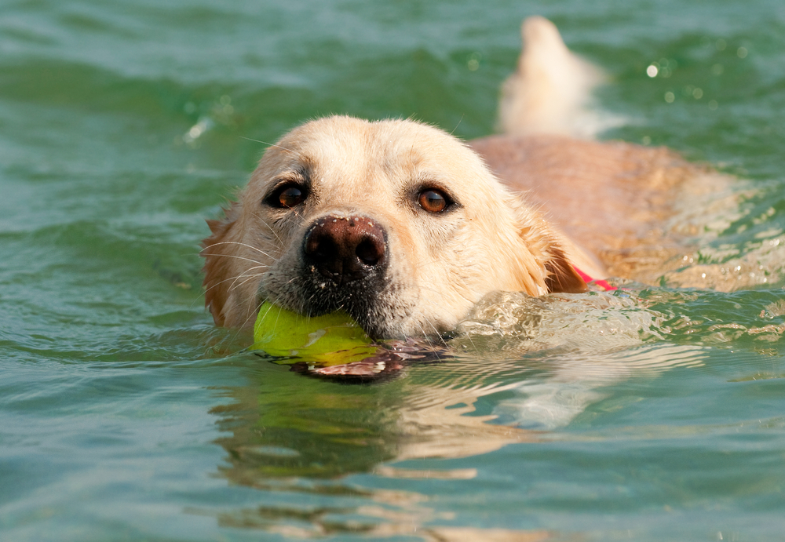

Pets
Baloo Dog
Baloo. Dog is a 9yr old labradoodle. He prefers to spend his days lounging among the three different beds/couches that his family has gifted him. He enjoys a walk or two around the neighborhood, as long as he can pretend that he doesn't see any of the other animals to avoid the embarrassment of not wanting to admit he has no wolf-like skills in chasing them.
At night just as the rest of the family is ready to relax, Bacon suddenly wants to release all of his energy. He will place his toys on a mini couch and frantically drag the couch around, giving his toys "a ride." There is also a lot of rolling. Lots and lots of rolling.
Photo Gallery
 
Likes
- Belly rubs
- Playing tug-of-war
- Sneaking onto the couch
Chako5 Dog
Here is a picture about Chako5!

Chako's favorite Food is Chicken Wings! And he always gets chicken wings when he performs well.
Birthday: Aug, 6th, 2022!
Likes
- Walk with Human
- Play his toy
Maple Cat
Here is a picture about Maple Cat!

Maple is a 2-year-old tabby cat with brown stripes. She is very playful and friendly but also loves lounging in the sun! Maple is a huge fan of treats - she has even learned how to open doors to steal some extra treats.
Likes
- Belly rubs
- Stretching her Paws
Pluto Dog
Here is a picture about Pluto dog!

Pluto is a five-year-old rescue dog of an unknown breed. He was found wandering alone and taken to the Valley Humane Society where he found his new family. From a young age, Pluto always had a special personality; he was known for being very, very lazy! He spends most of his time staring out the window to keep watch of his house. Don’t let the laziness fool you because Pluto defends his family from the mailman and squirrels every single day.
Likes
- Eating bones
- Play his toy duck
Van Gogh Cat
Here is a picture about Van Gogh Cat!

Van Gogh is a three-year-old cat of mixed ragdoll and domestic shorthair breed. He was adopted when he was 7 months old. Van Gogh has been a people cat since he was young. He craves attention but needs alone time when he wants it.
Likes
- Chicken Breast
- Biting his human